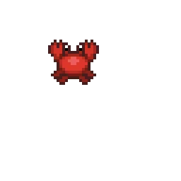
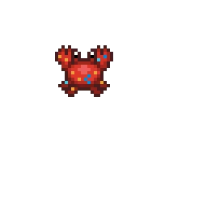
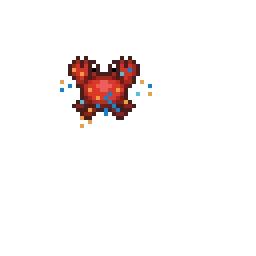
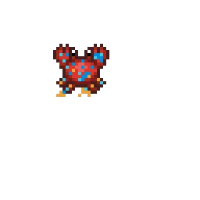

Project type:
2D Shoot-them-up Game in Unity.
Project description:
For this project, I made a beach-themed game in Unity about a crab defending the beach from octopuses. The crab shoots water balls to attack. There are 3 power ups: speed buff (pineapple), triple shot (coconut juice), shield buff (cherry).
------------------
For the UI, starting the game, a Main menu introducing the game's name and how to start the game. On the top left, there is the current Score and High Score to encourage players competition. The High Score is saved even after the game closes. When the player loses, the Main menu shows up and the current Score resets. If the current Score is higher than the High Score, that will be the new High Score. On the bottom right, there are 3 hearts, every time the player loses 1 heart, more sand and water appears on the character.
------------------
I believe the water shield animation can be better, the water and sand need to swirl more smoothly when the shield is created, and an animation that shows the shield is being maintained.
Date:
January 29 - March 22, 2024
Role:
Game Developer and Game Designer.
Project highlight:
Assets designed in Pixel Studio:





Galaga rip off:
I made a Galaga "rip off" before making Coastal Combat.